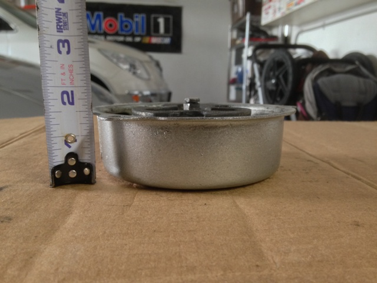

all years ATC 200m / 200es, 82-83 ATC 200e, all years ATC 185 / 185s / 200 / 200s
| 1978-1980 ATC 70 |
|---|
| The 78-80 ATC 70 recoils are identified by their small shape and 1 1/2" deep silver housing. They are shallower than 81-85 ATC 70 recoils, and their center stud actually sticks out just past the housing edge because of it. If you set a 78-80 ATC 70 recoil on a flat surface with the ratchet side down, it will not lay flat. ATC 70 recoils are different from other Honda ATC recoils with metal ratchets (aka dogs) as they use a third spring to give resistance to the friction plate to retract the dogs instead of setting springs. 78-85 ATC 70 recoils use the same pulley. |
|  |
| 1981-1985 ATC 70 |
| The 81-85 ATC 70 recoils are identified by their small shape and 1 3/4" deep silver housing. They are deeper than 78-80 ATC 70 recoils. ATC 70 recoils are different from other Honda ATC recoils with metal ratchets (aka dogs) as they use a third spring to give resistance to the friction plate to retract the dogs instead of setting springs. 78-85 ATC 70 recoils use the same pulley. |
| ALL YEARS ATC 90 |
| All years of ATC 90 recoils are very similar, but not exactly the same. The only difference I have found so far is the outlet hole for the rope can be inverted, requiring a pointed handle base, or protruding, in which case a normal handle can be used. The 90 recoil pictured below has a protruding rope hole. Also note that the 90 housing is about 2" deep when measured. Housing depth is the only way I have found to tell a 90 housing apart from a 79-80 110 housing. Also, 90 pullies only allow the use of 3/8" rope and are shallower than 79-80 110 pullies. Finally, 90 pullies have a rectangle rope cut-out on the top of the pulley while 110 pullies have a semicircle cut-out. Any year 90 recoil can be used on a 79-80 110 motor as long as you use the 90 pulley and housing together. You cannot mix and match 90 housings and 110 pullies or vice-versa, as it throws off the required depth. All 90 recoils use the same pulley, have no plastic internal parts and use three ratchets (aka dogs). |
| 1979-1980 ATC 110 |
| As far as I can tell all 79-80 110 recoils are the same. The 79-80 ATC 110 recoils are very similar to 90 recoils, with the main difference being housing depth. The 79-80 110 housings are right around 2 1/4" deep. The 79-80 110 pullies are deeper than 90 pullies, and can accept 1/4" rope. They also have a semicircle rope cut-out while the 90 pullies have a rectangle rope cut-out. A 79-80 110 recoil can be used on any year 90 motor as long as you use the 110 pulley and housing together. You cannot mix and match 110 housings and 90 pullies or vice-versa, as it throws off the required depth. All 110 recoils use the same pulley, have no plastic internal parts and use three ratchets (aka dogs). |
|
| Since I mentioned above how the 90 and 79-80 110 recoils are very similiar other than depth, here is a side by side comparison of the housing depth so you can see the difference. |
| 1981-1983 ATC 110 |
| The 81-82 ATC 110 recoils can be identified by their 2 1/2" deep housing. 81-82 recoils are silver and 83 recoils are black but either color will fit all 3 years. The 83 black recoils also have a triangle shaped protrusion just below where the rope exits, but this protrusion does not extend all the way down to the motor mating surface so they still use a completely round gasket between the recoil and motor. All 110 recoils use the same pulley, have no plastic internal parts and use three ratchets (aka dogs). |
| 1981-1982 ATC 110 pictured below |
| 1983 ATC 110 pictured below |
| 1984-1985 ATC 110 |
| The 84-85 ATC 110 recoils can be identified by their 2 1/2" deep black housing. They also have a triangle shaped protrusion just below where the rope exits, and on the 84-85 recoils this protrusion does extend down to the motor mating surface so the gasket between the recoil and motor will have the same triangle protrusion. All 110 recoils use the same pulley, have no plastic internal parts and use three ratchets (aka dogs). |
|
| 1984-1985 ATC 125M (ALSO 1985-1986 TRX 125) |
| The 84-85 ATC 125M recoils can be identified by their black housing, plastic pulley with single ratchet and medium size. |
| 1986-1987 ATC 125M (ALSO 1987-1988 TRX 125) |
| The 86-87 ATC 125M recoils can be identified by their silver housing, plastic pulley with single ratchet, and small size. They are not much larger than ATC 70 recoils. |
| ALL YEARS ATC 185/185S/200/200S |
| Recoils from these four models all interchange. They can be identified by their silver housing, large size, all metal internal parts, and three ratchets (aka dogs). The only difference you find on them is that the 1982 and later models have the integrated decompression cable that runs up to the cylinder head. These recoils will have a hole in the housing near where the rope exits, and they also use a different pulley that allows a plastic ring to sit on top of it. It is rare to find the decompression parts still present on these recoils, and they have become quite valuable on the used market. Each type of pulley can be used with either type of housing. Pictured in the second picture below is the type of pulley that is used with the decompression cable. |
| Since I mentioned decompression parts above, here is a picture showing them all together. |
| ALL YEARS ATC 200E BIG RED |
| The ATC 200E Big Red recoils can be identified by their black housing, large size, all metal internal parts, and three ratchets (aka dogs). They are very similar to the ATC 185/185S/200/200S recoils and can be used on those models in a pinch, but the housing shape is slightly different and won't match up exactly with the mating surface of the motor. |
| Since I mentioned above how the 185 and 200E recoils are very similiar, here is a side by side comparison of the housing shapes so you can see the minor differences. |
| ALL YEARS ATC 200M/200ES BIG RED (ALSO 1984 TRX 200) |
| The ATC 200M/200ES Big Red recoils can be identified by their black housing, plastic pulley with single ratchet, and large size. They are about the same size as the ATC 185/185S/200/200S recoils, but do not weigh as much because of the plastic internal parts. |
| PICTURE OF MOST HONDA ATC RECOILS SIDE BY SIDE TO SEE DIFFERENCES |
|
From left to right: 81-85 ATC 70, 86-87 ATC 125m, all years ATC 90 / 79-80 110, 84-85 ATC 125m, all years ATC 200m / 200es, 82-83 ATC 200e, all years ATC 185 / 185s / 200 / 200s |